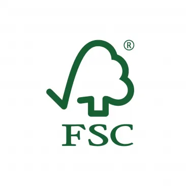
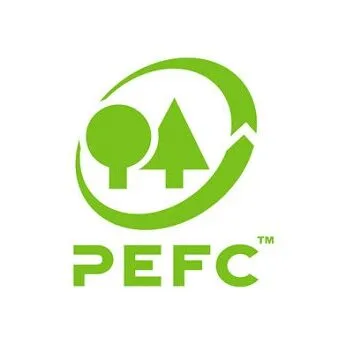
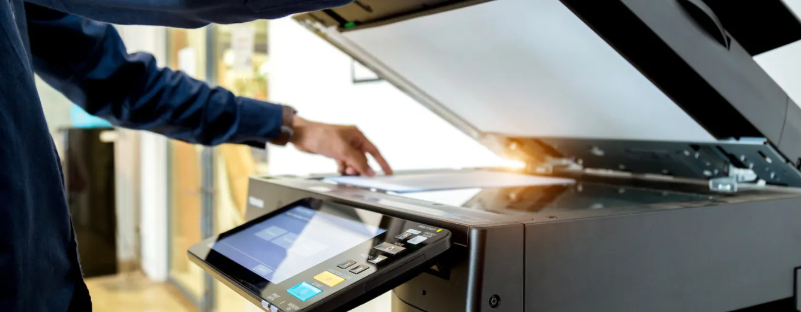
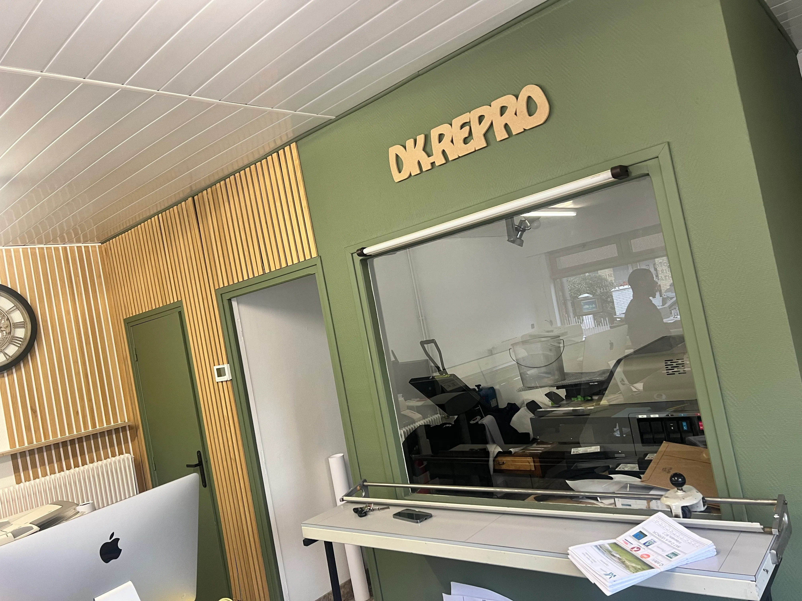

Imprimerie & reprographie à Dunkerque depuis 1979
Vos impressions prêtes à faire bonne impression.
Tirage de plans, dossiers, affiches, supports de communication ou flocage textile : DK Repro accompagne particuliers, associations et entreprises avec précision, rapidité et conseil.


Une imprimerie de proximité, réactive et précise.
Fondée en 1979 autour du tirage de plans, DK Repro a grandi avec les besoins de ses clients : reprographie, impression numérique, supports de communication, reliure et textile personnalisé.
Chaque demande est traitée comme un projet à part entière. Vous venez avec un fichier, une idée ou une urgence ; nous vous aidons à choisir le bon format, le bon papier et la finition adaptée.
Associations
Particuliers
Professionnels

Des supports nets, sans section qui écrase la page.
Le visuel reste présent, mais dans un format plus maîtrisé pour laisser respirer les services et les informations utiles.
Services d'impression
.webp)

Un passage, plusieurs services.
Profitez de votre venue pour vos impressions, devis et retraits Vinted Go.
Envoyez vos documents, nous préparons le reste.
dkrepro@nordnet.frJoignez vos fichiers, précisez les quantités, le format et la finition souhaitée pour recevoir un retour clair.
Une adresse bien notée à Dunkerque.
Note publique observée sur les avis Google et annuaires locaux.